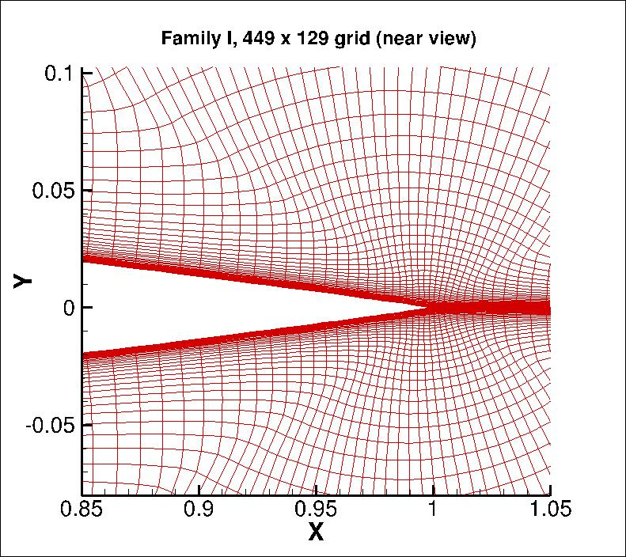
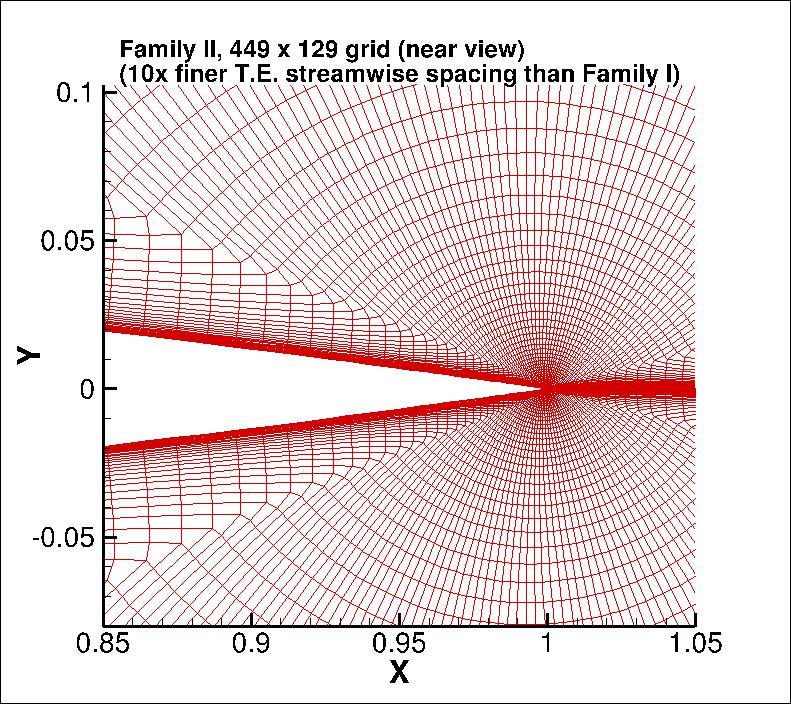
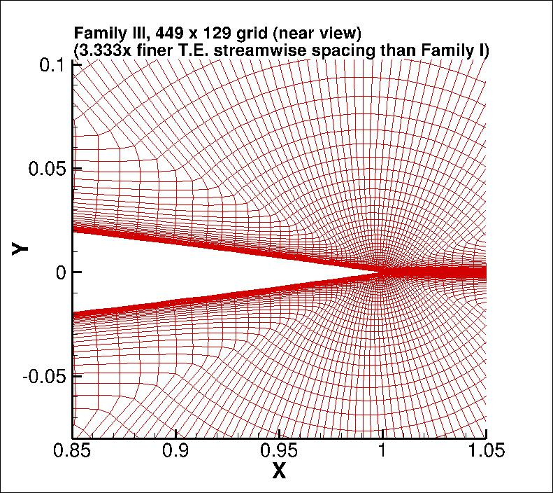

|
Langley Research CenterTurbulence Modeling Resource |
Return to: Numerical Analysis of 2D NACA 0012 Airfoil Validation Intro Page
Return to: Turbulence Modeling Resource Home Page
TURBULENCE MODEL NUMERICAL ANALYSIS
Grids - NACA 0012 Airfoil Case
NOTE: The original posted grids were based on the scaled NACA 0012 airfoil shape with a small typo in one of the coefficients. Although at this time the typo is believed to make insignificant difference in the results, all grids have been re-generated with the corrected airfoil shape as of 6/23/2014.
Three families of grids are provided. All have a farfield extent of approximately
500 c. Each family's finest grid is
7169 x 2049, with minimum spacing at the wall of 1 x 10-7 and average stretching rate normal to the wall
of about 1.02 for the points near the wall.
The leading edge spacing along the airfoil in all families is the same: 0.0000125 c.
The difference between the families is in their trailing edge streamwise spacing:
A series of 7 nested 2-D grids are provided for Families I and II,
whereas in the interest of space only the finest grid is provided for Family III.
Each coarser grid is exactly every-other-point
of the next finer grid, ranging from the finest 7169 x 2049 to the coarsest 113 x 33 grid.
(Please contact the page curator if you are unable to extract coarser levels for Family III.)
The topology is a so-called "C-grid," with the grid wrapping around the
airfoil from downstream farfield, around the lower surface to the upper, then back to
the downstream farfield again; the grid connects to itself in a
1-to-1 fashion in the wake. There are 4097 points on the airfoil surface on the finest
grid, with 1537 points along the wake from the
airfoil trailing edge to the outflow boundary.
The figures below show views of the 449 x 129 grid for each family.



Note: be sure to use double precision when reading the grids!
FAMILY I
FAMILY I STRUCTURED VERSIONS OF GRIDS
PLOT3D Files
The structured PLOT3D grids are given in two different ways, as 2-D grids (x-y plane) or as 3-D grids (two
identical x-z planes, separated by a distance y=1,
giving one spanwise cell for all grid levels). You may use whichever is more convenient for your particular
application.
Format for the structured 2D grids is PLOT3D-type, formatted, MG, 2D (nbl=1) - note that you
must use double precision when reading! :
Download the 2-D version of the FAMILY I grids in PLOT3D format (gzipped) here:
Format for the structured 3D grid is PLOT3D-type, formatted, MG, 3D (nbl=1, and idim in this case is 2) - note that you
must use double precision when reading! :
Note that none of these grid families is identical to the original family of grids supplied for the
NACA 0012 Validation Case. However, Family I should be reasonably similar.
read(2,*) nbl
read(2,*) (idim(n),jdim(n),n=1,nbl)
do n=1,nbl
read(2,*) ((x(i,j,n),i=1,idim(n)),j=1,jdim(n)),
+ ((y(i,j,n),i=1,idim(n)),j=1,jdim(n))
enddo
read(2,*) nbl
read(2,*) (idim(n),jdim(n),kdim(n),n=1,nbl)
do n=1,nbl
read(2,*) (((x(i,j,k,n),i=1,idim(n)),j=1,jdim(n)),k=1,kdim(n)),
+ (((y(i,j,k,n),i=1,idim(n)),j=1,jdim(n)),k=1,kdim(n)),
+ (((z(i,j,k,n),i=1,idim(n)),j=1,jdim(n)),k=1,kdim(n))
enddo
Download the 3-D version of the FAMILY I grids in PLOT3D format (gzipped) here:
If desired, example Neutral Map Files associated with 3-D version of the grids are given here (these files specify grid indices associated with each boundary condition - see The Neutral Map File):
FAMILY I UNSTRUCTURED VERSIONS OF GRIDS
CGNS Files
The unstructured versions of the same grids are all given as CGNS files. Note that the BCs written inside the CGNS files are for guidance only, and may not reflect the appropriate BCs needed for your application. To read/write CGNS files, (free) software may be necessary if your pre/post-processing tools do not already handle it. See: CGNS Website for details.
The unstructured grids are all given as 3-D grids (two identical x-z planes, separated by a distance y=1, giving one spanwise cell for all grid levels). They are given as hexahedra (quadrilaterals in the x-z plane). Note that duplicate gridpoints in the C-mesh wakes are removed when writing the structured grids as unstructured.
Download the unstructured FAMILY I CGNS grids (gzipped) as 3-D hexahedra (quadrilaterals in x-z plane) here:
FAMILY II
FAMILY II STRUCTURED VERSIONS OF GRIDS
PLOT3D Files
The structured PLOT3D grids are given in two different ways, as 2-D grids (x-y plane) or as 3-D grids (two identical x-z planes, separated by a distance y=1, giving one spanwise cell for all grid levels). You may use whichever is more convenient for your particular application.
Format for the structured 2D grids is PLOT3D-type, formatted, MG, 2D (nbl=1) - note that you must use double precision when reading! :
read(2,*) nbl
read(2,*) (idim(n),jdim(n),n=1,nbl)
do n=1,nbl
read(2,*) ((x(i,j,n),i=1,idim(n)),j=1,jdim(n)),
+ ((y(i,j,n),i=1,idim(n)),j=1,jdim(n))
enddo
Download the 2-D version of the FAMILY II grids in PLOT3D format (gzipped) here:
Format for the structured 3D grid is PLOT3D-type, formatted, MG, 3D (nbl=1, and idim in this case is 2) - note that you must use double precision when reading! :
read(2,*) nbl
read(2,*) (idim(n),jdim(n),kdim(n),n=1,nbl)
do n=1,nbl
read(2,*) (((x(i,j,k,n),i=1,idim(n)),j=1,jdim(n)),k=1,kdim(n)),
+ (((y(i,j,k,n),i=1,idim(n)),j=1,jdim(n)),k=1,kdim(n)),
+ (((z(i,j,k,n),i=1,idim(n)),j=1,jdim(n)),k=1,kdim(n))
enddo
Download the 3-D version of the FAMILY II grids in PLOT3D format (gzipped) here:
If desired, example Neutral Map Files associated with 3-D version of the grids are given here (these files specify grid indices associated with each boundary condition - see The Neutral Map File):
FAMILY II UNSTRUCTURED VERSIONS OF GRIDS
CGNS Files
The unstructured versions of the same grids are all given as CGNS files. Note that the BCs written inside the CGNS files are for guidance only, and may not reflect the appropriate BCs needed for your application. To read/write CGNS files, (free) software may be necessary if your pre/post-processing tools do not already handle it. See: CGNS Website for details.
The unstructured grids are all given as 3-D grids (two identical x-z planes, separated by a distance y=1, giving one spanwise cell for all grid levels). They are given as hexahedra (quadrilaterals in the x-z plane). Note that duplicate gridpoints in the C-mesh wakes are removed when writing the structured grids as unstructured.
Download the unstructured FAMILY II CGNS grids (gzipped) as 3-D hexahedra (quadrilaterals in x-z plane) here:
FAMILY III
FAMILY III STRUCTURED VERSIONS OF GRIDS
PLOT3D Files
In order to save space, the structured PLOT3D grid for this family is only given for the finest level as a 2-D grid (x-y plane). Please contact the page curator if you are unable to extract coarser levels (which are simply every other grid point in each coordinate direction for each successively-coarser level), or if you require an unstructured CGNS version of a Family III grid. Format for the structured 2D grid is PLOT3D-type, formatted, MG, 2D (nbl=1) - note that you must use double precision when reading! :
read(2,*) nbl
read(2,*) (idim(n),jdim(n),n=1,nbl)
do n=1,nbl
read(2,*) ((x(i,j,n),i=1,idim(n)),j=1,jdim(n)),
+ ((y(i,j,n),i=1,idim(n)),j=1,jdim(n))
enddo
Download the 2-D version of the finest FAMILY III grid in PLOT3D format (gzipped) here:
Return to: Numerical Analysis of 2D NACA 0012 Airfoil Validation Intro Page
Return to: Turbulence Modeling Resource Home Page
Responsible NASA Official:
Ethan Vogel
Page Curator:
Clark Pederson
Last Updated: 11/26/2019